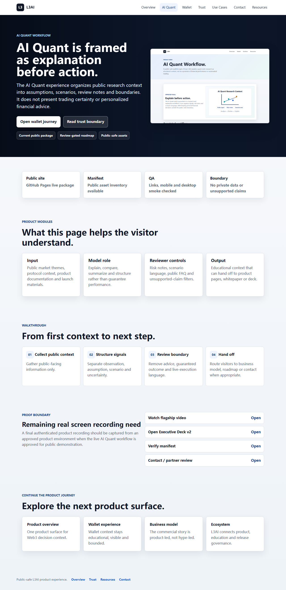
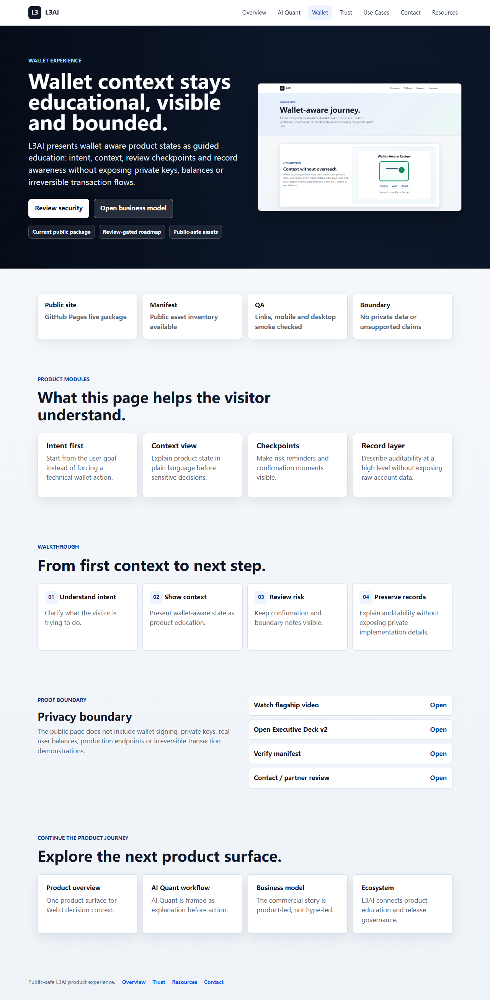
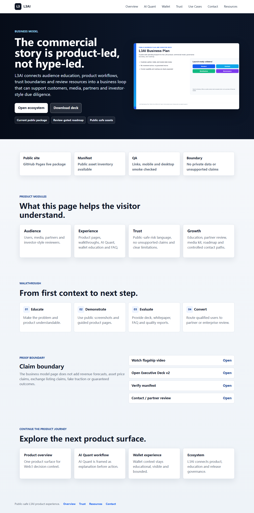

GitHub Pages package with public-only resources.
Product-led brand system
The homepage now opens with product evidence, not document inventory.
Visitors see the live experience, then move into the deck, whitepaper, media kit or partner path with a clear trust boundary.

01
AI workflow as the first proof point
AI-assisted context is presented as a guided product surface with visible limitations and public-language controls.

02
Wallet-aware education without private exposure
The public journey explains wallet context while keeping signing, credentials and real user data out of the media layer.

03
Launch assets ready for review
Video, social graphics, business plan, whitepaper and public manifests are connected through the Resources library.
Product experience map
Every visitor gets a crisp route in the first 30 seconds.
The public site routes customers, investors, media and partners through dedicated product surfaces before asking them to open a deck or resource library.
Product OverviewOne surface for Web3 decision context.
AI Quant WorkflowExplain-first research context and boundaries.
Wallet ExperienceWallet-aware education without private data exposure.
Business ModelAudience, experience, trust and growth loop.
EcosystemProduct, media, partner and governance map.
Security & TrustPublic claim controls and release evidence.
RoadmapCurrent, in progress and planned work separated.
Enterprise Use CasesRole-specific review paths.
Contact / PartnerSafe handoff for qualified conversations.
Supporting launch asset
Use the 3-minute video after the product path is clear.
The premium promo video supports the product journey with public screenshots, workflow framing, trust boundaries and launch collateral. It is rendered as a 1920x1080 MP4 with English and Chinese subtitle files.
Rendered package: 3:15, 1920x1080, H.264 MP4, subtitle files included. Final human voice-over remains a manual production option.
Platform story
From noisy Web3 inputs to an organized decision workspace.
L3AI presents market context, product education, wallet-aware journeys and risk notes as a structured experience. The public site now leads with product proof before documents.
Discover
Start from the public homepage, product narrative and FAQ boundary.
Understand
Review AI-assisted market context, wallet-aware journeys and product modules.
Evaluate
Open the business model, roadmap, whitepaper and investor-style deck.
Act carefully
Keep safety, limitations and public risk language visible before conversion.
Live demo proof
A real public journey, not a pile of files.
The showcase connects homepage discovery, AI Quant explanation, wallet-aware education, business model context and public resources in one reviewer-friendly path. The current package now includes authentic browser screenshots and recordings captured from the public site.

PREMIUM-ASSETS-030
Authentic product recordings are now part of the launch package.
The recording pack captures the current public website flows for homepage discovery, AI Quant, wallet education, business model review, Resources and Contact / Partner routing. It uses only public site content and keeps private implementation details out of the media layer.
Captured from the public site package. No private code, credentials, wallet signing material or real user data appears in the recording.
Business model visualization
Public narrative, product education and ecosystem review in one loop.
AudienceWeb3 users, media, partners, investors
ExperienceAI context, wallet-aware journeys, resources
TrustFAQ, risk language, no unsupported claims
GrowthEducation, media kit, partner review, roadmap
Automation capability
Production materials are generated through a controlled public-asset pipeline.
The current package connects source facts, AI-assisted drafting, rendered collateral, link checks, sensitive scans and public manifests without exposing private source or protected access material.
Content production
Website copy, FAQ, whitepaper, deck narrative, scripts and bilingual public materials.
Visual evidence
Public screenshots, demo frames, product journeys and readiness trackers.
Release control
Manifests, sitemap, GitHub Pages publishing, link scans and protected-access boundaries.
Video production
Rendered 3:15 MP4, subtitles, poster, thumbnail, storyboard and asset manifest.
Ecosystem overview
One public surface for product, education, trust and launch review.
L3AI
AI market context
Wallet-aware education
Public resources
Business deck
Media kit
Risk boundary
Trust and safety
Clear boundaries are part of the product experience.
L3AI public materials do not provide personalized investment advice, guaranteed outcomes, exchange endorsements or real-funds demonstrations. Planned functionality is kept separate from current public assets.
No guaranteed returns
No private source exposure
No live trading demo
No wallet signing in public media
No fake traction or partner claims
Roadmap summary
What is live, what is being improved, and what remains planned.
Public launch package
Homepage, showcase pages, whitepaper, business plan, FAQ, media kit, manifests and public GitHub Pages site.
Premium production layer
Enterprise homepage redesign, rendered flagship video, upgraded Executive Deck v2 and quality scoring.
Advanced media system
Motion graphics, professional voice-over, authenticated recording pack and deeper localization.
Choose your path
Different visitors get a clear first action.
Flagship resources
Open the production package when you need the files.
The Resources page remains the complete library, but the homepage now leads with the product story and routes deeper review by intent.